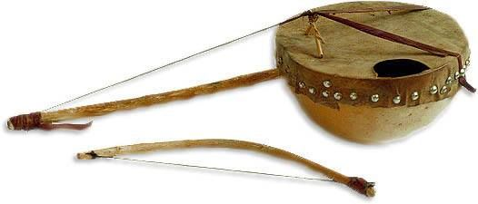

الآلات والموسيقى الصحراوية

آلة الإمزاد وإيقاعات "تندي"
آلة الإمزاد الوترية العريقة والمعزوفات التي تنقل روح الصحراء وهدوء الليالي.

فرِق التيناريوين والغناء الصحراوي
مزج بين الآلات التقليدية والحديثة لتقديم ألحان صحراوية وصل صداها للعالمية.